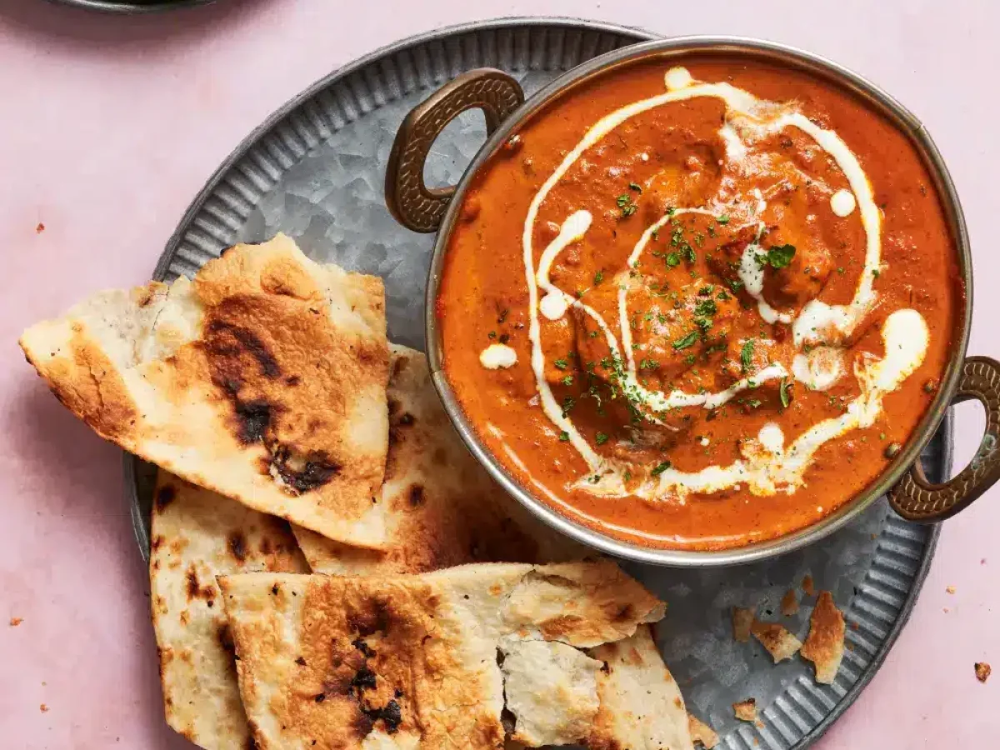

Butter Chicken

Description:
A popular Indian dish featuring tender chicken cooked in a rich and creamy tomato-based sauce.
Ingredients:
- 500g chicken breast, cut into cubes
- 1 cup tomato puree
- 1/2 cup cream
- 2 onions, finely chopped
- 3 cloves garlic, minced
- 1 tbsp ginger, grated
- 2 tbsp butter
- 1 tsp cumin powder
- 1 tsp coriander powder
- 1 tsp garam masala
- 1 tsp chili powder
- Salt to taste
- Fresh cilantro for garnish
Steps:
- Heat butter in a large pan over medium heat. Add chopped onions and sauté until golden brown.
- Add garlic and ginger, cook for another minute.
- Add cumin powder, coriander powder, garam masala, and chili powder. Mix well.
- Add chicken cubes and cook until they are no longer pink.
- Pour in tomato puree and simmer for 15-20 minutes until the chicken is cooked through.
- Stir in cream and cook for another 5 minutes until the sauce is rich and creamy.
- Garnish with fresh cilantro and serve hot with rice or naan.
Back to Home